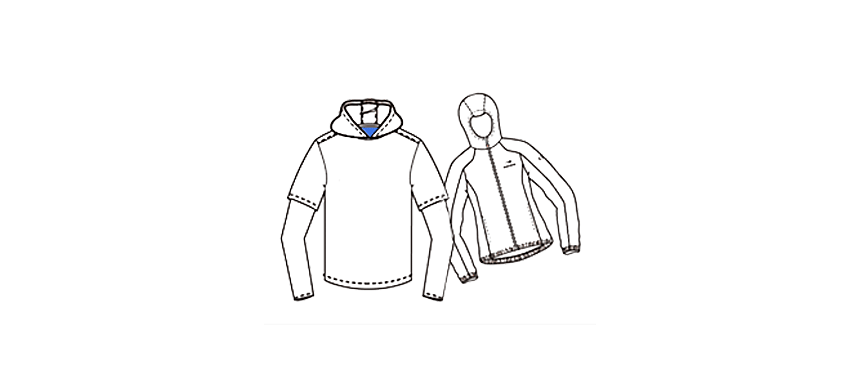

최근 유행을 타고 있는 기능성 의류는 구입 후 잘못된 세탁 후에 보관한 제품을 장롱에서 꺼내 입으려다 A/S 신청을 하시는 분들이 많습니다. 한번 변형이 된 제품은 기능이 현저하게 떨어져 평범한 제품으로 전락하는 경우가 많습니다. 기능성 제품의 세탁방법과 보관방법을 메모 한 후 기능성 의류와 함께 건강하고 즐거운 산행 되시기 바랍니다.

기능성 의류세탁방법
기능성 의류 제품들은 세탁/보관 방법에 따라서 수명이 달라집니다. 최근 유행을 타고 있는 기능성 의류는 구입 후 잘못된 세탁 후에 보관한 제품을 장롱에서 꺼내 입으려다 AS 신청을 하시는 분들이 많습니다. 한번 변형이 된 제품은 기능이 현저하게 떨어져 평범한 제품으로 전락하는 경우가 많습니다. 기능성 제품의 세탁방법과 보관방법을 메모 한후 기능성 의류와 함께 건강하고 즐거운 산행 되시기 바랍니다. 방수, 투습 의류의 대표적인 기능인 방수, 발수, 투습 기능은 결코 영구적이지 않습니다. 세탁을 지나치게 자주 하거나 너무 안하는 것이 문제가 되는데 예전 상식으로는 될수 있으면 세탁하지 않는것이 제품에 좋을 것으로 알고 있었습니다. 그러나 땀을 많이 흘렸거나 오염물질이 묻었을 경우에는 바로 세탁하지 않으면 기능이 줄어 들 수 있습니다. 세탁할 때도 섬유유연제나 표백제를 사용하는 것은 치명적일 정도로 그 수명을 단축시키며, 자장 좋은 방법은 미지근한 물(40°C)에서 중성 세제(삼푸,울삼푸등)를 사용하여 가볍게 주물러 가면 손 빨래하는것이 좋습니다. 등산용품 점에서 판매 되고 있는 고어텍스 전용 세재(텍스타일,워시,익스트림 워시등) 가 판매되고 있으나, 가정용 울삼프를 희석해서 사용 해도 무방합니다. 세제찌거기를 남기면 탈색과 멤브레인(박막) 손상의 원인이 됨으로 맑은 물이 나올 때까지 완전히 헹궈줘야 합니다. 비권장 상황이나 굳이 세탁기를 사용 할 경우는 지퍼, 벨크로, 단추등을 다 잠근 상태에서 다른 의류와 섞지 않고 세탁하시기 바랍니다. 세탁이 끝나면 옷걸이에 걸어 그늘에서 건조시킵니다.
발수 기능
물을 내부에 통과시키지 않고는 것이 방수기능이며, 의류의 표면에서 방울져 구르게 만들어 스며들지 않게 하는것이 발수 기능입니다. 특히 발수 기능은 세탁과 착용으로 인해 시간이 지나면 기능이 떨어지게 되어 있습니다. (테플로 가공의 경우 물 세탁 10회정도 하였을 경우 70%정도의 기능 하락이 됩니다.) 이를 회복하기 위해서는 세탁, 건조 후에 낮은 온도로 스팀 다림질을 하는 것이 좋습니다. 물론 의류 안쪽의 세탁 라벨을 참조로 하여 정확한 방법으로 하는 것이 좋습니다. 참고로 시중에 방수 스프레이 같은 제품을 세탁 후 젖은 상태에서 뿌려 주면 건조 과정에서 의류에 스며들어 방수 기능(실제로는 발수) 기능을 강화시켜 줍니다. 제품에 따라서는 완전 건조 후 뿌려 주는 방수 스프레이도 있습니다.